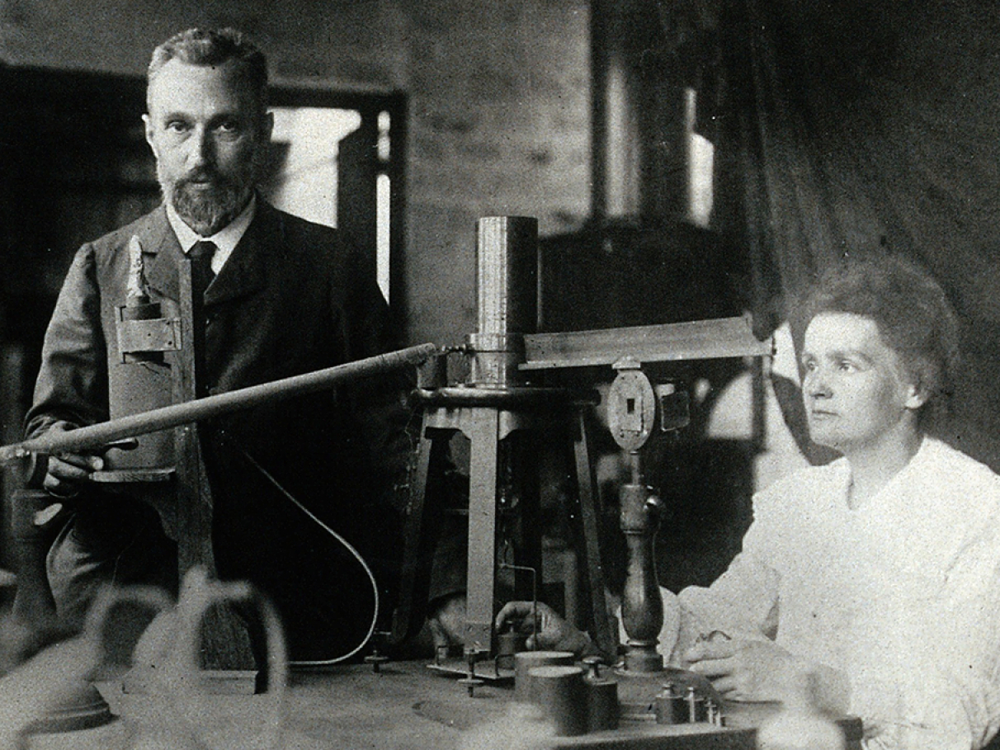

História
A história da Tabela Periódica é fascinante e remonta a séculos de descobertas científicas e avanços na compreensão da estrutura da matéria. Desde os tempos antigos, os alquimistas tentavam entender e classificar os elementos conhecidos. Eles reconheciam diferentes tipos de materiais, como metais e não metais, e tentavam transformar uns nos outros em busca da chamada "pedra filosofal", uma substância capaz de converter metais comuns em ouro.
Durante a Revolução Científica, entre os séculos XVII e XVIII, cientistas como Robert Boyle e Antoine Lavoisier começaram a realizar experimentos sistemáticos e a desenvolver teorias mais fundamentadas sobre a matéria e a química. Lavoisier é especialmente conhecido por seu trabalho na identificação e nomeação dos elementos químicos.

Robert Boyle
Antoine-Laurent de Lavoisier foi um proeminente químico francês do século XVIII, conhecido por suas descobertas fundamentais sobre a conservação da massa, a composição do ar e a natureza da combustão. Ele desafiou a teoria do flogisto e introduziu o conceito de oxigênio. Seu legado na química moderna é indelével, apesar de sua vida ter sido tragicamente interrompida durante a Revolução Francesa, quando foi guilhotinado em 1794.

Antoine Lavoisier
Antoine-Laurent de Lavoisier foi um proeminente químico francês do século XVIII, conhecido por suas descobertas fundamentais sobre a conservação da massa, a composição do ar e a natureza da combustão. Ele desafiou a teoria do flogisto e introduziu o conceito de oxigênio. Seu legado na química moderna é indelével, apesar de sua vida ter sido tragicamente interrompida durante a Revolução Francesa, quando foi guilhotinado em 1794.
Durante o século XIV, foi o período em que a química moderna começou a se consolidar. Diversos cientistas começaram a investigar as propriedades dos elementos e a procurar padrões nelas. Os principais foram:
John Dalton
John Dalton foi um influente químico e físico britânico do século XIX, célebre por sua teoria atômica, que propôs que os átomos são as unidades fundamentais da matéria e que cada elemento químico é composto por átomos idênticos. Ele também desenvolveu a Lei das Proporções Múltiplas e a Lei das Proporções Definidas. Sua contribuição revolucionária para a compreensão da estrutura da matéria solidificou seu lugar na história da ciência.

Johann Döbereiner
Johann Wolfgang Döbereiner, químico alemão do século XIX, ficou famoso por suas "tríades", agrupamentos de elementos com propriedades químicas similares. Sua Lei das Tríades ajudou a estabelecer relações entre os elementos, antecipando a tabela periódica moderna.
John Newlands
John Newlands, químico inglês do século XIX, propôs a "Lei das Oitavas", relacionando as propriedades dos elementos químicos com sua posição na tabela periódica. Essa ideia, embora inicialmente não tenha sido bem recebida, influenciou o desenvolvimento futuro da tabela periódica.

Dmitri Mendeleev
Dmitri Mendeleev, químico russo do século XIX, é famoso por criar a tabela periódica dos elementos. Organizou os elementos por propriedades químicas e massa atômica, prevendo até elementos ainda não descobertos. Sua contribuição revolucionou a química, estabelecendo uma estrutura essencial para compreender os elementos e suas relações.
Durante o século XX, houve uma explosão de descobertas na química, incluindo a identificação de novos elementos e a compreensão mais profunda da estrutura atômica. Algumas das principais descobertas foram:
-

Descoberta do Rádio (1898): Embora o rádio tenha sido descoberto no final do século XIX por Marie Curie e Pierre Curie, sua identificação e isolamento foram oficialmente anunciados em 1898. O rádio é um elemento altamente radioativo e é utilizado em uma variedade de aplicações, incluindo na medicina e na indústria.
-

Descoberta do Rádio (1913): O técnico de laboratório Frederick Soddy e o químico Ernest Rutherford descobriram que o rádio emitia partículas alfa e beta, o que levou ao desenvolvimento do conceito de isótopos e à compreensão de que os átomos de um elemento podem ter diferentes massas atômicas.
-

Descoberta do Protactínio (1917): O Protactínio foi descoberto por Otto Hahn e Lise Meitner em 1917. É um elemento radioativo que ocorre naturalmente e é encontrado em minerais de urânio. Tem várias aplicações em reatores nucleares e em pesquisa nuclear.
-
Descoberta do Neptúnio (1940): Edwin McMillan e Philip H. Abelson descobriram o Neptúnio em 1940. É o primeiro elemento transurânico (um elemento com número atômico maior que o do urânio) a ser sintetizado artificialmente. O Neptúnio tem aplicações em reatores nucleares e na produção de plutônio.
-

Descoberta do Plutônio (1940): Glenn T. Seaborg, Edwin McMillan, Joseph W. Kennedy e Arthur Wahl descobriram o Plutônio em 1940. Assim como o Neptúnio, é um elemento transurânico que é sintetizado artificialmente. O Plutônio é usado principalmente em armas nucleares e reatores nucleares.
-

Descoberta dos Transactinídeos (a partir de 1940s): A partir da década de 1940, muitos outros elementos transurânicos foram sintetizados em laboratório, incluindo o Amerício, Cúrio, Berquélio, Califórnio, Einstênio, Férmio, Mendelévio, Nobélio, Laurêncio, Rutherfórdio, Dubnium, Seabórgio, Bohrio, Hassio, Meitnério, Darmstádio, Roentgênio, Copernício, Nihônio, Fleróvio, Moscóvio, Livermório, Ténes, Oganessônio, e provavelmente mais no futuro.
Com relação a estrutura atômica, também houve uma série de descobertas fundamentais, que contribuíram significativamente para a compreensão dos elementos e da matéria em geral. Algumas delas foram:
- Modelo Atômico de Bohr (1913): Niels Bohr propôs um modelo atômico em que os elétrons orbitam em torno do núcleo do átomo em órbitas específicas, ou "níveis de energia". Esse modelo ajudou a explicar as linhas espectrais dos átomos de hidrogênio e estabeleceu a base para a compreensão da estrutura eletrônica dos átomos.
- Descoberta do Elétron (1897): J.J. Thomson descobriu o elétron, a primeira partícula subatômica, e propôs o "modelo do pudim de passas", onde os elétrons são distribuídos uniformemente em uma nuvem de carga positiva.
- Descoberta do Próton (1917): Ernest Rutherford identificou o próton como uma partícula subatômica com carga positiva, localizada no núcleo do átomo.
- Modelo Atômico de Schrödinger (1926): Erwin Schrödinger desenvolveu a equação de onda que descreve o comportamento dos elétrons em um átomo como ondas de probabilidade. Esse modelo, juntamente com a mecânica quântica, forneceu uma compreensão mais precisa da distribuição eletrônica nos átomos.
- Descoberta do Nêutron (1932): James Chadwick descobriu o nêutron como uma partícula subatômica sem carga elétrica, localizada no núcleo do átomo.
- Teoria da Estrutura Eletrônica dos Átomos: Com base nas descobertas de elétrons, prótons e nêutrons, os cientistas desenvolveram teorias e modelos para descrever a distribuição de elétrons nos átomos. Isso inclui o conceito de orbitais atômicos, que descreve as regiões de espaço onde os elétrons são mais prováveis de serem encontrados.
Essas descobertas transformaram nossa compreensão da matéria e da natureza dos átomos, levando a avanços significativos na química, física e outras áreas científicas. Eles também forneceram as bases teóricas para o desenvolvimento de tecnologias como a energia nuclear, a espectroscopia e a nanotecnologia.
Por fim, nos dias atuais, a Tabela Periódica é uma ferramenta essencial para os químicos, sendo usada para prever propriedades de elementos, entender padrões de reatividade e projetar novos materiais. Ela continua a evoluir à medida que os cientistas descobrem novos elementos e desenvolvem uma compreensão mais profunda da estrutura atômica e das interações químicas.